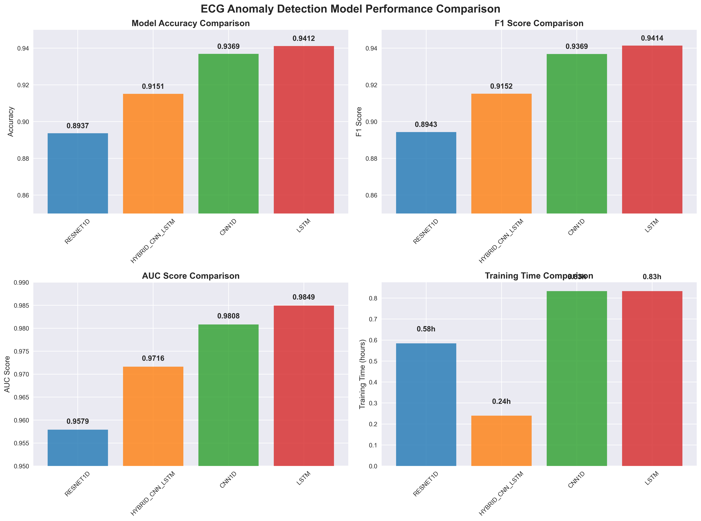
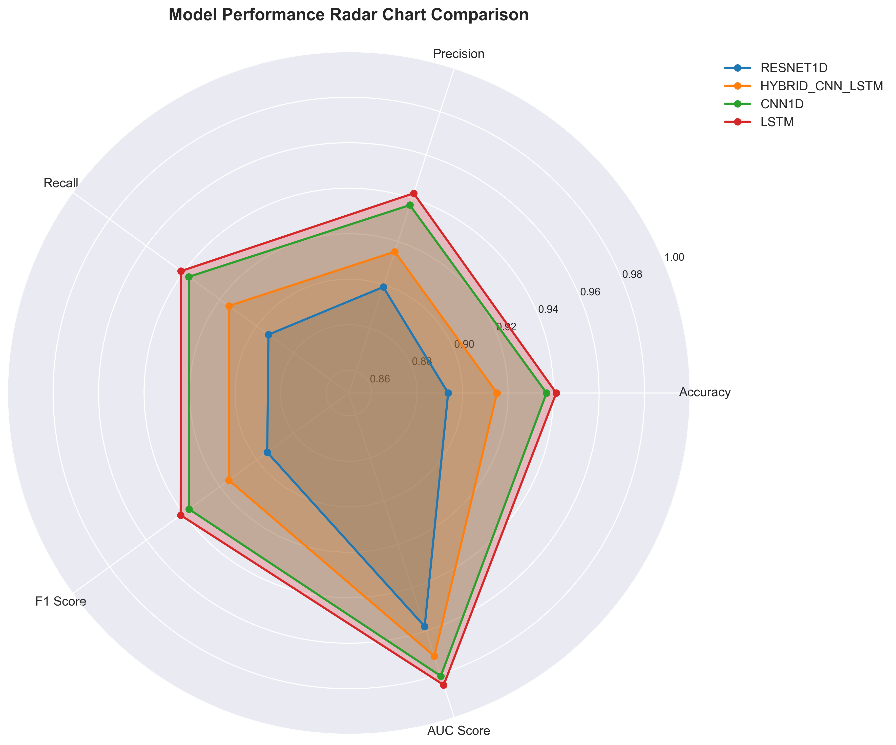
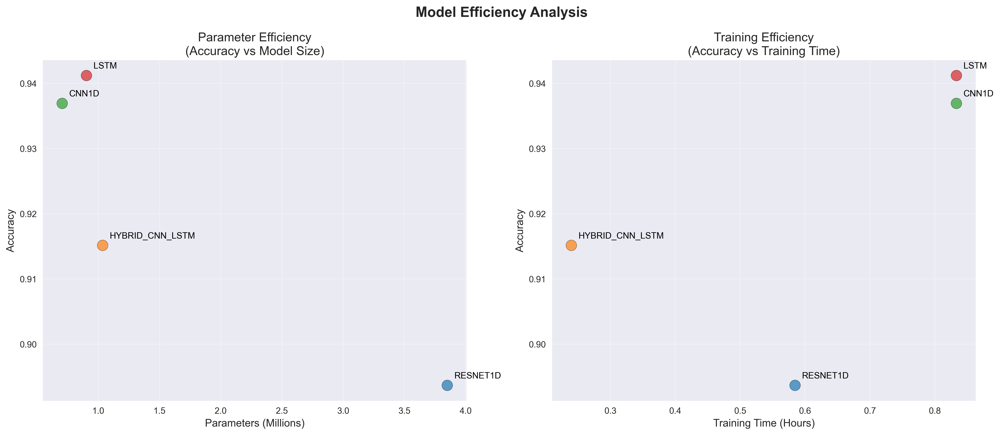
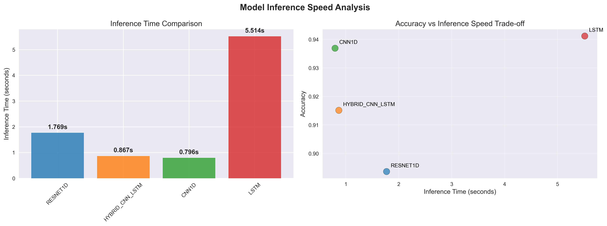
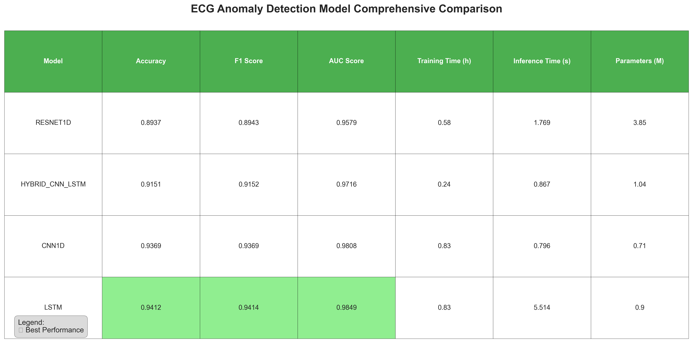

🫀 ECG Anomaly Detection Model Evaluation Results
📊 Evaluation Overview
This comprehensive evaluation compares four deep learning models for ECG anomaly detection:
🏆 LSTM
Accuracy:
94.12%
F1 Score:
94.14%
AUC Score:
98.49%
Parameters:
0.90M
🥈 CNN1D
Accuracy:
93.69%
F1 Score:
93.69%
AUC Score:
98.08%
Parameters:
0.71M
🥉 Hybrid CNN-LSTM
Accuracy:
91.51%
F1 Score:
91.52%
AUC Score:
97.16%
Parameters:
1.04M
ResNet1D
Accuracy:
89.37%
F1 Score:
89.43%
AUC Score:
95.79%
Parameters:
3.85M
🎯 Key Findings:
- Best Overall Performance: LSTM model achieves the highest accuracy (94.12%) and AUC score (98.49%)
- Most Efficient: CNN1D offers the best balance of performance and parameter efficiency
- Fastest Training: Hybrid CNN-LSTM trains in just 0.24 hours
- Fastest Inference: CNN1D provides the quickest inference at 0.796 seconds

This chart shows the key performance metrics across all four models. The LSTM model consistently achieves the highest scores in accuracy, F1 score, and AUC, while the Hybrid CNN-LSTM model demonstrates the fastest training time.
🎯 Radar Chart Comparison

The radar chart provides a comprehensive view of all performance metrics simultaneously. The LSTM model shows the most balanced and highest overall performance across all metrics.
⚡ Efficiency Analysis

These scatter plots analyze the trade-offs between model complexity/training time and accuracy. The CNN1D model offers excellent parameter efficiency, while the Hybrid CNN-LSTM provides the best training time efficiency.
🚀 Inference Speed Analysis

For real-time applications, inference speed is crucial. The CNN1D and Hybrid CNN-LSTM models offer the fastest inference times while maintaining good accuracy.
📋 Comprehensive Comparison Table

This detailed table summarizes all key metrics for easy comparison. Green highlighting indicates the best performance in each category.
🎯 Recommendations
- 🏆 For Highest Accuracy: Use LSTM model (94.12% accuracy, 98.49% AUC)
- ⚖️ For Balanced Performance: Use CNN1D model (good accuracy with fastest inference)
- ⚡ For Fastest Training: Use Hybrid CNN-LSTM model (0.24 hours training time)
- 🚀 For Real-time Inference: Use CNN1D or Hybrid CNN-LSTM model (< 1 second inference)
- 💡 For Parameter Efficiency: Use CNN1D model (best accuracy per million parameters)